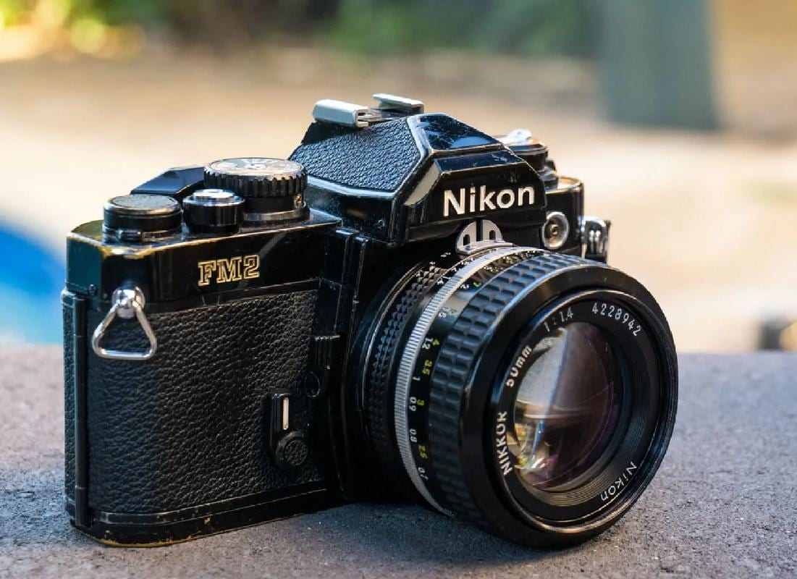

尼康 FM2

1/4000 秒机械快门，胶片单反的可靠代表。
客观评测
尼康 FM2 是 1982 年上市的机械快门单反，钛合金纵走快门最高 1/4000 秒、闪光同步 1/250 秒，即使电池耗尽也完全可拍，仅测光功能受影响。中央重点测光以画面中央约 60% 为权重，精度可靠。全金属机身做工扎实，约 540 克，兼容庞大的尼康 F 卡口镜头群，早期 AI 镜头可实现测光联动。可配 MD-12 卷片器实现约 3.5 张/秒连拍。
主观点评
FM2 的快门声干脆利落，过片行程绵密，是公认最好听的快门之一。全机械结构让它在严寒与野外格外可靠，速度盘上的 1/2500 与 1/4000 档位本身就是技术宣言。它没有自动功能，却把曝光三要素摆在最直白的位置，是学习摄影的绝佳老师。四十年过去，成色好的 FM2 依然抢手，是胶片单反中保值的代表。
优点与不足
- 全机械结构，极端环境依然可靠
- 1/250 秒闪光同步，优于多数单反
- 兼容庞大且实惠的尼康 F 卡口镜头群
- 无自动功能，上手需要学习成本
- 年代久远，购买时需留意快门状态
参数规格
| 类型 | 35mm 机械快门单镜头反光相机 |
|---|---|
| 画幅 | 135 全画幅 |
| 胶片 | ISO 25-3200 |
| 快门 | 钛合金纵走快门，1-1/1000 秒外加 1/2000、1/4000，X 同步 1/250 秒 |
| 测光 | 中央重点测光（仅测光需电池） |
| 对焦 | 手动对焦 |
| 取景 | 五棱镜取景器，视野率约 93% |
| 连拍 | 可配 MD-12 卷片器，约 3.5 张/秒 |
| 闪光 | 热靴 + PC 同步端子 |
| 卡口 | 尼康 F 卡口 |
| 重量 | 约 540 克（机身） |